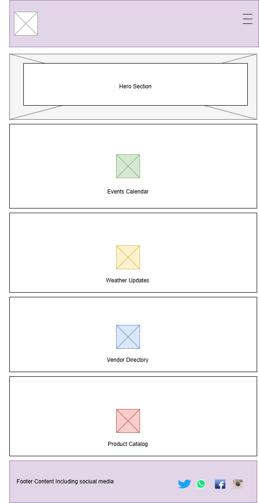
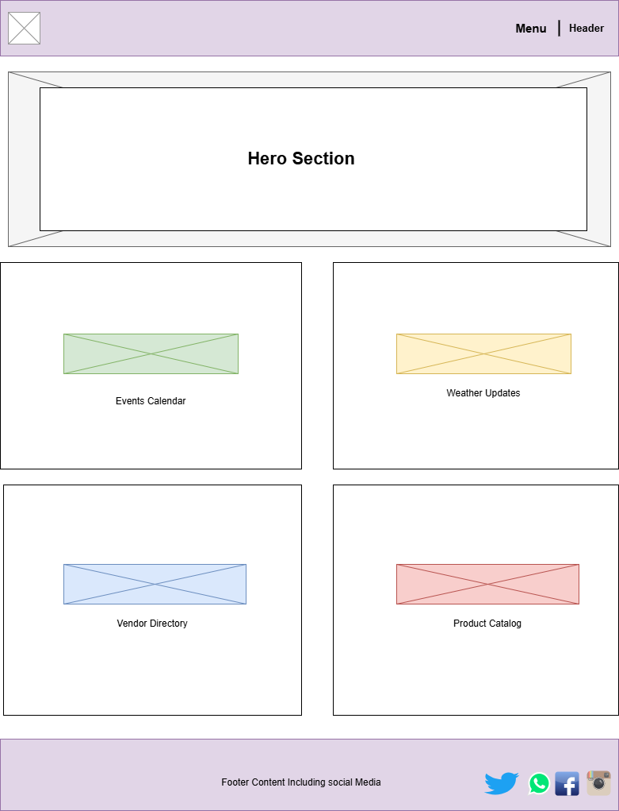

1. Setup
Project Description: The website serves as a hub for a local farmers' market, featuring vendor information, product catalogs, events calendar, and integration with weather updates via an API.
Technologies: HTML, CSS, JavaScript.
2. Content
Site Name
FarmFresh Market Hub
Reason: Reflects the focus on fresh, local produce and farming community engagement.
Site Purpose
The site aims to provide a comprehensive resource for the local community to explore vendor offerings, seasonal produce availability, market events, and sustainable farming practices.
Scenarios
- "What vendors are currently selling organic vegetables?"
- "How can I register as a vendor for the next market event?"
Color Schema
Primary Color: #4CAF50 (Green) - Used for headings and accents.
Secondary Color: #FFC107 (Yellow) - Used for buttons and call-to-action elements.
Typography
Heading Font: Montserrat
Body Font: Roboto
Usage: Montserrat for headings, Roboto for body text for readability and consistency.
Wireframe
Sketch layout for desktop and mobile views:
Mobile View Wireframe
Larger View Wireframe
3. CSS
Basic CSS to style the site using the defined color schema and typography.
4. Testing
Validate HTML and CSS.
Test across multiple browsers and devices.
Use DevTools for JavaScript runtime errors and performance diagnostics.